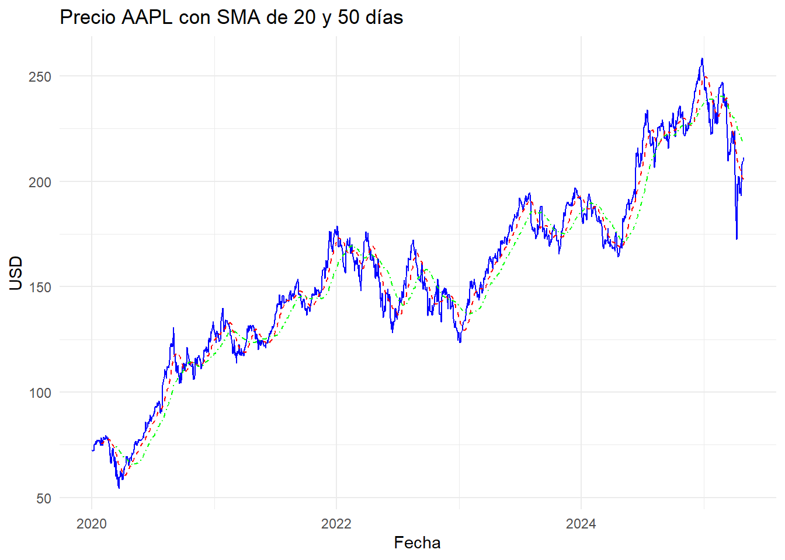

Capitulo3 Preprocesamiento y Visualización – AAPL (Apple Inc.)
3.1 Introducción.
En esta sección se busca describir, mediante técnicas gráficas y estadísticas, el comportamiento subyacente de la serie temporal del precio ajustado de las acciones de Apple Inc. Para ello, se aplican funciones de preprocesamiento que permiten evaluar tendencias, rezagos, estacionalidad y estacionariedad.
3.2 Objetivo.
Manipular y transformar la base de datos de AAPL utilizando herramientas estadísticas de series temporales para identificar patrones como tendencia, estacionalidad y residuos, con el fin de comprender el comportamiento histórico de la acción y su posible proyección futura.
#Librerias
library(TTR)
library(dplyr)
# Cálculo de medias móviles
apple_data <- apple_data %>%
mutate(
SMA20 = SMA(adjusted, n = 20),
SMA50 = SMA(adjusted, n = 50)
)
# Visualización
library(ggplot2)
ggplot(apple_data, aes(x = date)) +
geom_line(aes(y = adjusted), color = "blue", size = 0.4) +
geom_line(aes(y = SMA20), color = "red", linetype = "dashed") +
geom_line(aes(y = SMA50), color = "green", linetype = "dotdash") +
labs(title = "Precio AAPL con SMA de 20 y 50 días", x = "Fecha", y = "USD") +
theme_minimal()
3.3 Descomposición de la serie.
# Cálculo de rezagos
apple_data <- apple_data %>%
mutate(
lag_1 = lag(adjusted, 1),
lag_7 = lag(adjusted, 7),
lag_30 = lag(adjusted, 30)
)
# Gráfico comparando precio actual vs. rezago 7 días
ggplot(apple_data, aes(x = lag_7, y = adjusted)) +
geom_point(alpha = 0.5, color = "darkblue") +
labs(title = "Precio actual vs. rezago 7 días", x = "Precio 7 días atrás", y = "Precio actual") +
theme_minimal()
El valor-p es mayor a 0.05, por tanto no se rechaza la hipótesis nula: la serie no es estacionaria.
3.4 Diferenciación.
# Serie de tiempo
apple_ts <- ts(apple_data$adjusted, frequency = 365, start = c(2020, 1))
# Prueba Dickey-Fuller
library(tseries)
adf.test(apple_ts)##
## Augmented Dickey-Fuller Test
##
## data: apple_ts
## Dickey-Fuller = -3.0277, Lag order = 11, p-value = 0.1433
## alternative hypothesis: stationary##
## Augmented Dickey-Fuller Test
##
## data: diff_apple_ts
## Dickey-Fuller = -11.094, Lag order = 11, p-value = 0.01
## alternative hypothesis: stationaryLuego de una primera diferenciación, el valor-p es menor a 0.05, lo que indica que la serie ahora es estacionaria. La transformación fue exitosa.
3.5 Identificación de cambio estructural.
# Agregación mensual
apple_monthly <- apple_data %>%
mutate(month = format(date, "%Y-%m")) %>%
group_by(month) %>%
summarise(mean_adjusted = mean(adjusted))
apple_ts_monthly <- ts(apple_monthly$mean_adjusted, start = c(2020,1), frequency = 12)
# Descomposición
decomp <- decompose(apple_ts_monthly)
plot(decomp)
Se detecta un punto de cambio relevante alrededor de la observación 219, coincidente con el año 2020.
residuos)
Los residuos no siguen una distribución normal (p < 0.05), pero muestran independencia. El modelo puede considerarse válido con reservas.
3.6 Conclusión.
La serie del IMAE-Valle no era inicialmente estacionaria, pero pudo transformarse mediante diferenciación. Se identificó un cambio estructural importante en 2020. La serie fue descompuesta exitosamente y se modeló con ARIMA, permitiendo predicciones razonables. Estos pasos son clave para un análisis riguroso y reproducible de series de tiempo.